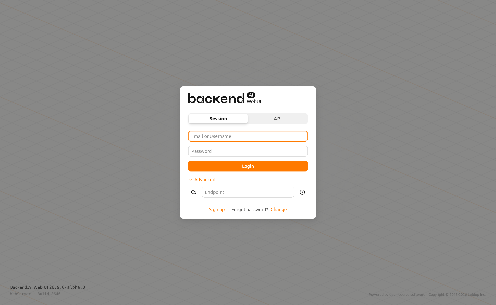
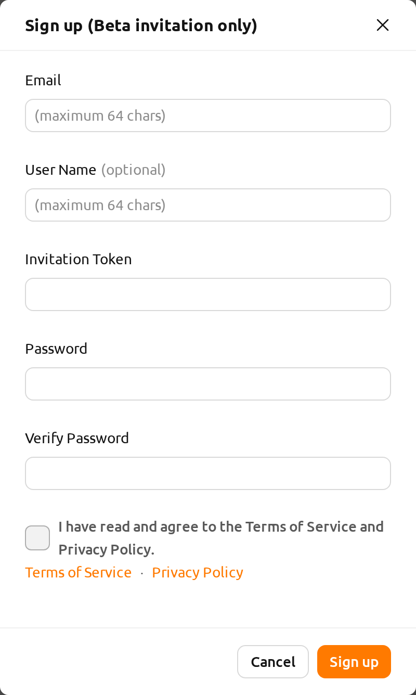
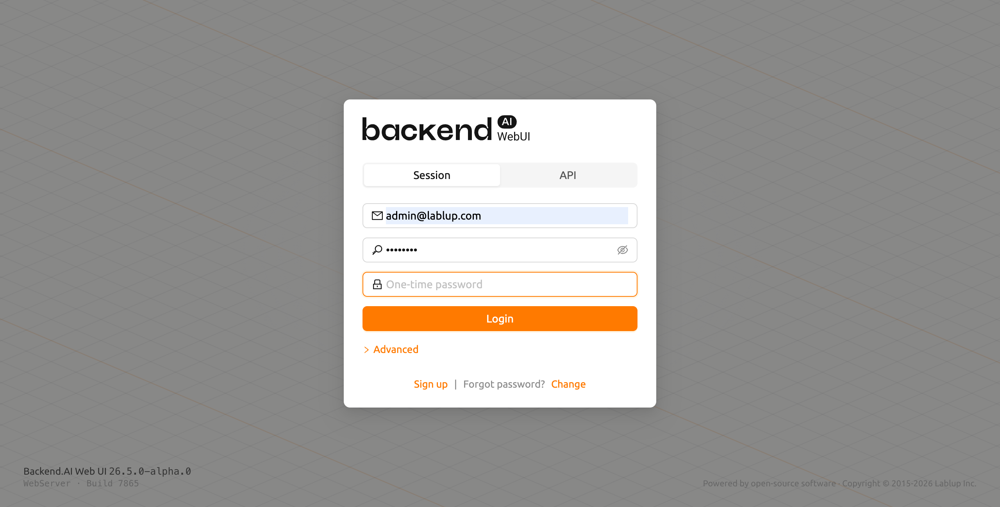
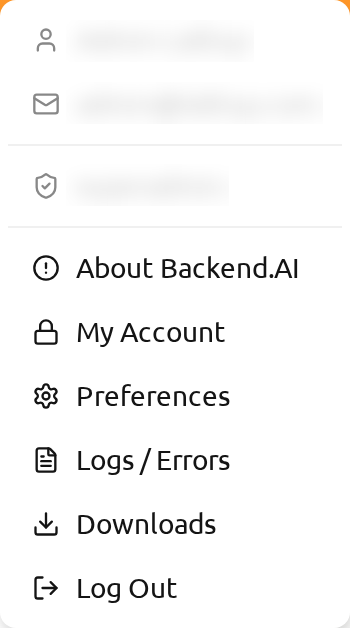
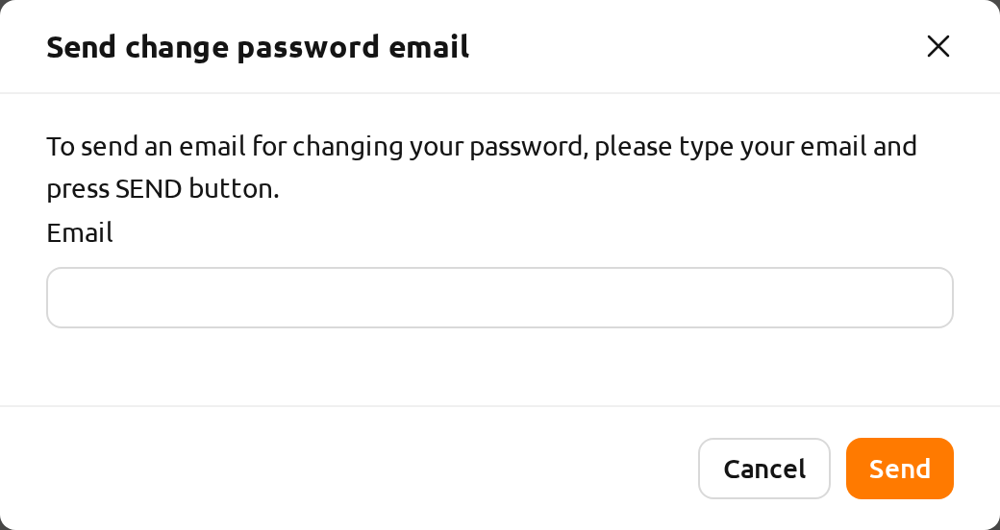
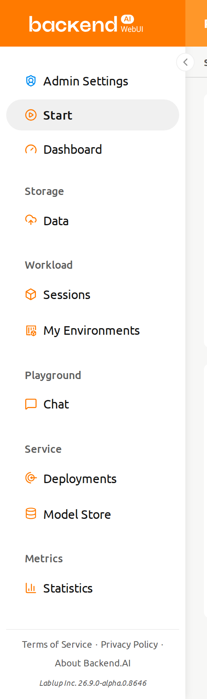
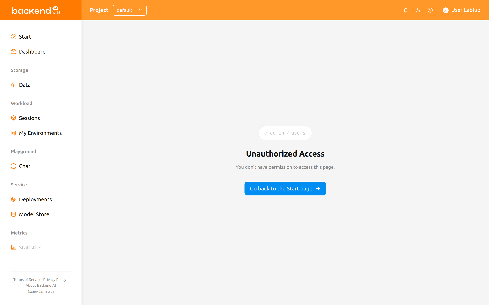

Sign up and Log in#
Sign up#
When you launch the WebUI, the login dialog appears. If you haven't signed up
yet, click the Sign up link at the bottom of the dialog.

Enter the required information, read and agree to the Terms of Service /
Privacy Policy, and click the Sign up button. Depending on your system settings,
you may need to enter an invitation token to sign up. A verification email may
be sent to verify that the email is yours. If the verification email is sent, you
will need to read the email and click the link inside to pass verification
before you can log in with your account.

Depending on the server configuration and plugin settings, signing up by anonymous user may not be allowed. In that case, please contact the administrator of your system.
To prevent malicious users from guessing user's password, passwords must be 8 or more characters with at least one alphabet(s), number(s), and special character(s).
Log in#
Enter your email (or username) and password, then click the Login button.
The login screen displays an animated Diagonal Weave background pattern behind the
login dialog. The animation is automatically disabled if your operating system is set
to reduce motion. The application version and build information appear in the
bottom-left corner, and copyright information appears in the bottom-right corner of the
screen. The first field is automatically focused when the login dialog opens — the
email/username field in Session mode, or the API Key field in API mode.
Connection mode#
If enabled by your administrator, a mode selector appears at the top of the
login dialog allowing you to choose between Session mode and API mode.
- Session: The standard login mode. Enter your email/username and password to authenticate. This is the default mode for most users.
- API: Log in using an API keypair. Enter your API Key and Secret Key instead of email and password. This mode is useful for programmatic access.
API endpoint#
Click the Advanced link to expand the endpoint configuration section. In the
API Endpoint field, enter the URL of the Backend.AI Webserver that relays
requests to the Manager.
Depending on the installation and setup environment of the Webserver, the endpoint might be pinned and not configurable.
Backend.AI keeps the user's password securely through a one-way hash. BCrypt, the default password hash of BSD, is used, so even the server admins cannot know the user's password.
SSO login (SAML / OpenID)#
If your administrator has configured Single Sign-On (SSO), additional login
buttons may appear below the standard Login button:
- Login with SAML: Authenticate using your organization's SAML identity provider.
- Login with [Realm Name]: Authenticate using an OpenID Connect provider. The button label shows the realm name configured by your administrator.
Click the appropriate SSO button to be redirected to your organization's identity provider for authentication.
SSO login options are only visible when enabled by your system administrator.
OTP login (two-factor authentication)#
If two-factor authentication (2FA) is enabled for your account, an additional OTP (One-Time Password) field appears after you enter your email and password.

Open your authenticator application (such as Google Authenticator, 1Password, or Bitwarden) and enter the 6-digit code in the OTP field to complete login.
TOTP setup on first login#
If your administrator requires two-factor authentication and you have not yet set up TOTP, a setup dialog will appear automatically after your first successful login. Scan the QR code with your authenticator application or manually enter the provided key, then enter the 6-digit verification code to complete the setup.
After setting up TOTP, you will need to enter the OTP code on every subsequent login.
For more details about enabling or disabling 2FA from your account settings, refer to the 2FA Setup section in Top Bar Features.
Concurrent session detection#
If you attempt to log in while your account is already logged in from another browser or device, a confirmation dialog will appear informing you that an existing session is active. You can choose to end the existing session and proceed with the new login, or cancel to keep the existing session.
This feature helps prevent unintended concurrent access to your account. If you see this dialog unexpectedly, it may indicate that someone else is using your credentials. In that case, proceed with the login to terminate the other session and consider changing your password.
After logging in, you can check the information of the current resource usage on the Start page.
By clicking the user icon in the upper-right corner, you will see the user menu.
You can log out by selecting the Log Out menu item.

If your system has a login session timer enabled, you will be automatically logged out when the timer expires. For details, see the Login Session Timer section in Top Bar Features.
When you forgot your password#
If you have forgotten your password, click the Forgot password? text and
then the Change link on the login panel. A dialog will appear where you can
enter your email address to receive a password change link. Follow the
instructions in the email to reset your password.

Depending on the server configuration, the password change feature may not be available. In that case, contact your administrator.
If login failure occurs more than 10 times consecutively, access to the endpoint is temporarily restricted for 20 minutes for security reasons. If the access restriction continues after 20 minutes, please contact your system administrator.
Sidebar menus#
Menus available to your role#
The sidebar lists only the pages you are allowed to open. Every user sees the general menu groups; the Administration groups appear in addition for superadmins and domain admins.
Project-admin entries are evaluated against the currently selected project, not against your account as a whole. The project you are working in is part of the page address, so switching projects with the project selector in the header re-evaluates your role: the same account can be a project admin in one project and a regular user in another, and the sidebar gains or loses the project-admin entries accordingly. The same is true when you open a bookmark or a shared link that names a specific project — the sidebar reflects your role in that project as soon as the page loads.
For the entries a project admin receives and what each of them shows, see The Project Admin sidebar in the Project Admin Features chapter.
Resizing the sidebar#
Change the size of the sidebar via the buttons on the right side of the sidebar.
Click it to significantly reduce the width of the sidebar, giving you a wider view of its contents.
Clicking it again will return the sidebar to its original width.
You can also use the shortcut key ( [ ) to toggle between the narrow and original sidebar widths.

Pages you cannot open#
If you open an address you are not allowed to see — for example a bookmark saved while you held a different role, or a link shared by an administrator — the WebUI replaces the page content with an Unauthorized Access page. The page shows the address you tried to open, explains that you do not have permission to access it, and offers a button that takes you to the first page that is available to you. The sidebar falls back to the general menu at the same time, so you can keep navigating without logging out.

Seeing this page does not mean something is wrong with your account. It means the page requires a role you do not hold in the project named in the address. If you expect to have access, ask your administrator to check your role for that project.